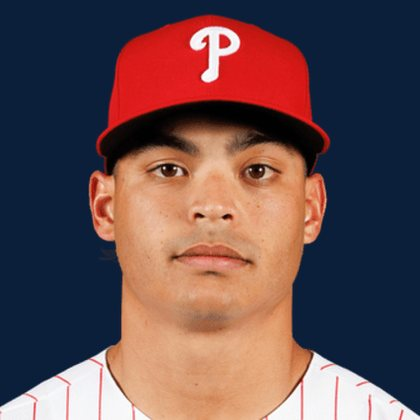

BASE KEEP
The Keep · The Diamond
Player File · SP PHI

Jesús Luzardo
#44 · SP · Philadelphia Phillies · age 28 · B/T LL · 6' 0" / 218 lbs · MLB debut 2019 · Lima, Peru
Keep avg66.35
# Boards23
BK Value2,047
Spread42–90
Pitching
| Year | G | GS | W | L | SV | HLD | IP | K | BB | HR | ERA | WHIP | K/9 |
|---|---|---|---|---|---|---|---|---|---|---|---|---|---|
| 2026 | 25 | 25 | 11 | 5 | 0 | 0 | 150.1 | 185 | 46 | 12 | 3.23 | 1.15 | 11.08 |
| 2025 | 32 | 32 | 15 | 7 | 0 | 0 | 183.2 | 216 | 57 | 16 | 3.92 | 1.22 | 10.58 |
The Keep#63BK 2,047
BK's Pitchers#17BK 5,534
The Diamond#65BK 1,969
The 2026 line
Keep #63 · avg 66.35 · 23 boards · 3.23 ERA, 1.15 WHIP, 185 K in 150.1 IP
Baseball Savant
Starcast · spray · pitch
Percentile ranks (Starcast) plus the official Savant spray chart for bats and pitch chart for arms. Open the full Baseball Savant page.
Pitcher · 2026
xERA
92
xwOBA
92
FB Velo
82
FB Spin
37
K %
92
BB %
64
Whiff %
90
Chase %
82
Barrel %
75
Hard Hit %
91
EV
80
Max EV
45
Pitch chart
Minus
- Board spread 42–90 (48 ranks).
Board graph
Spread 42–90 · 23 sources
Every Board
Spread 42–90 · 23 sources
| Source | Rank |
|---|---|
| Pitcher List | 42 |
| RotoGraphs Model | 49 |
| The Athletic | 56 |
| CBS Sports | 62 |
| Ottoneu | 62 |
| ESPN | 64 |
| NFBC ADP | 64 |
| Baseball Prospectus | 64 |
| The Dynasty Dugout | 64 |
| Baseball America | 64 |
| MLB Pipeline mix | 64 |
| Mastersball | 64 |
| Yahoo Fantasy | 64 |
| ATC ROS | 64 |
| Razzball | 66 |
| Fantasy Baseballers | 66 |
| Enos Slaughter | 66 |
| Four-Seam Fantasy | 69 |
| Dynasty League Baseball | 72 |
| RotoWire | 83 |
| FanGraphs The Board | 83 |
| FantasyPros Dynasty ECR | 84 |
| TDG Points | 90 |
BK News
On The Keep nearby — Riley Greene (#61) · Logan Henderson (#62) · Bryce Harper (#64) · Kyle Tucker (#65)
All players · The Keep · The Diamond · BK News · The Lineup · Pitchers · Calculator